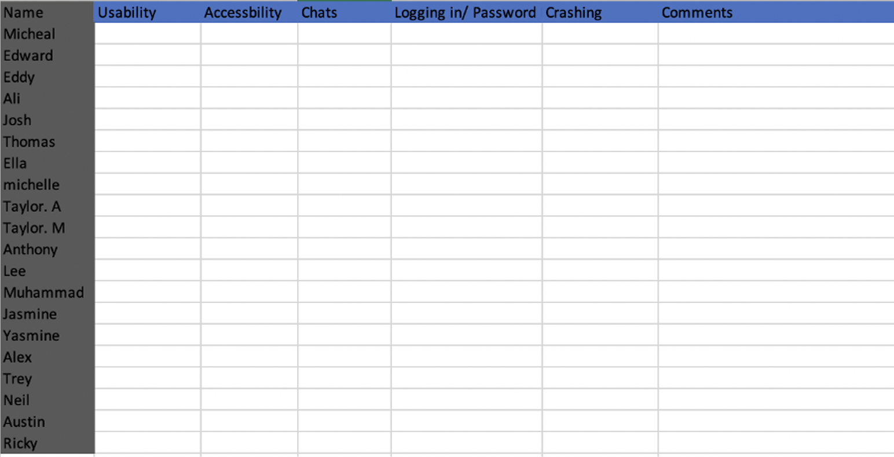
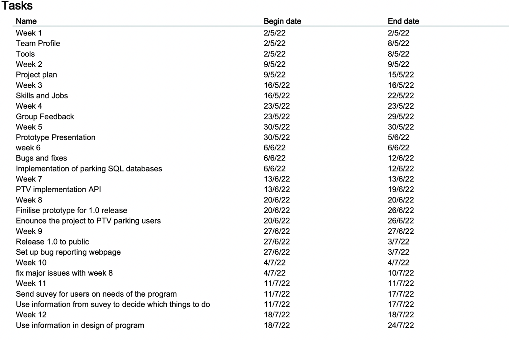
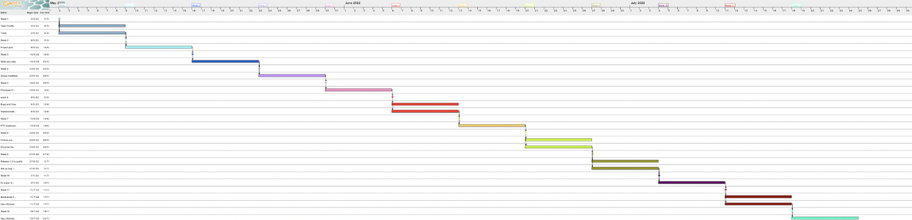

Report Content
Scope And Limits
To define the scope and limits of the PTV parking app it must be understood what is needed within the project and how long it is. The time for the prototype and project as a whole will be 25 days with four people. The project mainly from the description is a PTV parking application on your phone which allows you to see available spaces from the app via google maps or other maps api’s.
The project time frame must be within 29 days, and as such makes the first limitation of the project. The time frame since the last project was handed in on the 1st of May and this one is needed to be done on the 29th of May giving the frame of 29 days. Another limitation is to only incorporate the use of a website, iOS, and android application for the project, as going any further will require more time to incorporate, this is also a scope since we need to be able to create these three designs / processes. The scope of the website is for the user’s ability for the use of the application for computer users as well as users who don’t want the application as an app on their phones. IOS and android is for the more common user, as it is a better alternative for the website application for mobile users and will be the main scope of the projects for its design and use.
Common scope aspects of the application will be User Control and Freedom, ensuring the user of the application will have many back buttons to allow the user to control where they go and how to get back. Aesthetics and minimal design will be within the scope as it’ll allow for the ease of use to be better incorporated, example being small logos, only showing icons on car parking spots and a less condensed navigation bar. The Last predominant scope will be the Journey planner, allowing the user to define a date and time on where to park using PTV parking.
Tools and Technologies
As our application is based on an IOS or Android Platform so the programming systems for Apple and Android (C++, Java, JavaScript, and XML) skills are required. Atom, Sublime, and Visual Studio Code are examples of code editing software. To design User-Interface mock-ups, use tools like Wireframe. Cloud Services are required to store data collected by the app through user interaction. A website is created using HTML, CSS, and a little Java Script. Figma, an interface design tool, would also be utilised to build the application's more detailed output. We'll be utilising Visual Studio Code for the actual software. Hardware required for the actual product: Physical hard drives are required to keep backups of data in case something happens to cloud services and vice versa. A computer to create and edit code. The possibility of an Apple, Android, and computer device for testing.
Risks
One of the risks that this project will face is the knowledge required for coding and programming in this application. It will be required because it will allow the application's design to be incorporated into the final project, which may be difficult if our group's programmers do not have prior coding experience. Learning and determining which coding will be used requires time and research, both of which must be completed prior to the deadline. This enables programmers to learn from their mistakes and proceed with the final application without any errors or last-minute incident. Learning to program would also have enabled the creation and addition of new features to the application, as these generic features would have been simple to learn for the applications for the programmers and simple to understand from a user's Perspective.
Another significant risk is developing a design that the intended users do not understand nor know how to use/operate the application. Learning common application designs would have simplified the interface, but this will also take time and research. The third issue could be a lack of time to test the application, which can be accomplished by interviewing people and asking them if they understand how to use the application without difficulty and if they have encountered any software errors. Testing the application by conducting a survey, for example, will allow errors to be easily identified, giving you enough time to address any issues that arise.
Another risk is the time limit, which will prevent us from sending out surveys to our targeted consumers to find out what they think of our software and whether there is anything they would like to change. Also, ask if it's something they'd use frequently. As we did not locate any competitors, there will be no people who have already used an application like ours, so finding our users will take time. We wouldn't have enough time to add extra-ordinary features to the application.
We also have a limited budget, which will affect the software we can use to construct the app. While some of our group members are proficient in coding languages, they do not have access to all software resources that can create apps. This can either include spending time learning a new language or spending money on technology that we can quickly code on and comprehend. Overall, we might be penalised for not finishing this project on time due to a lack of time and a limited budget.
Skills and Jobs
Were our project to be funded by a group of investors and a team be needed to be constructed to further our development, I believe that the four specialists of our group that would be needed would be a lead developer, a user design expert, a front-end developer, and back-end developer. I believe the skills and abilities that these four members would bring to our team would be the necessary components to truly bring our application to life, as each team member would be able to specialise on a certain aspect of the application, yet the general skills across all members would allow for flexibility within the group to cover any weakness that we may come across in the development period.
Firstly, I believe it important to have a lead developer in the team as we can look to one person who will be able to make the informed decisions on the important matters during the development of our application. Additionally, having someone with experience leading the team will allow all for greater insight into good development processes which will result in all team members to be confident and comfortable during the development of the application. This means that all team members will have better performances within the team, resulting in a more polished and complete application. One further skill that the lead developer will have that will be vital during the development process will be their communication and presentation skills. These skills will help the team, having the lead developer be able to accurately present work plans and other necessary information to the team. Furthermore, the lead developer will be able to have meetings with our investors and accurately communicate and discuss the business needs, in addition to explaining the technical aspects and progress of the team’s development in simple terms to the businesspeople who desire progress updates.
Secondly, I think it important to have a user design expert in the team to ensure that our application is as usable and accessible as possible. By employing a user design expert, they will be able to accurately analyse the competition and give the team an important understanding of what is necessary for the application to succeed. Furthermore, the user design expert will be able to make informed design decisions when collaborating with the front-end developer to ensure all aspects of Neilson’s usability heuristics will be met, resulting in a well-designed and simple to understand application. Additionally, the user design expert will be able to conduct meaningful and beneficial alpha and beta testing to understand the habits of our user base and make accurate and informed suggestions for the future development of our application.
Finally, the employment of both a front-end and a back-end developer will be necessary to create a finalised version of our application. As both developers would be collaborating closely with another team member, it is important for the two to not only have a strong technical background in their specific role, but also to have effective communication skills to help in the co-development of each feature that they are implementing. For the front-end developer, they will be responsible for creating the primary design of the application. They will do this while collaborating closely with the user design expert, using their findings from their research and competitive analysis to make informed decisions on how best to construct the user interface of the application. As the name suggests, the back-end developer would be primarily working on the behind-the-scenes aspects of the application, such as the code and the necessary databases. They would be working closely with the lead developer, splitting the tasks between the two while also coming to each other when making important decisions for the construction of different back-end elements, such as the design of the databases throughout the application.
Testing
We must do comprehensive user testing in accordance with the application we have designed. Individuals who are suitable for our testing method, such as university students and teachers, would be recruited. They would be the best candidates because this software was created to help students and teachers find parking in the city. We'd also need a group of about 20 people (10 students and 10 teachers) We'd use the original prototype and do some basic testing with the team to see if there are any common issues, and if there are, we'd try to fix them before testing it again with the public for a stage 2 test. Then at last we'd devise a test strategy that focused on issues like feature usability and functionality. We'd also need to devise a test to see if numerous people can utilise the product at the same time without causing our servers to fail. Or if they're having trouble logging in, unable to search for parking or getting fluid access to the app's capabilities. The following is how we would document our findings in an excel sheet. We would then communicate to the recruited individuals to come to a specified testing location where we would conduct our testing. As per the Excel sheet we would then document all our findings and then meet as a team and discuss potential issues and create a documentation outlining which issues are priorities and require immediate fixing and work towards completing a finished product.
Timeframe
The project will have its protype state from weeks 1 – 6 in the calendar. However, from weeks 6 – 12 the project will become wider in expansion and will be allowed for users to use the app within these dates. Each person / student is to do an estimated time of 36 hours each per week, thus giving a total of 144 hours a week on the project. Each state is to be completed before moving onto the next, and each milestone is to be the week of these. The time is between the 2nd of May to the 24th of July. Down below is a description of what is to be done and what is done. 